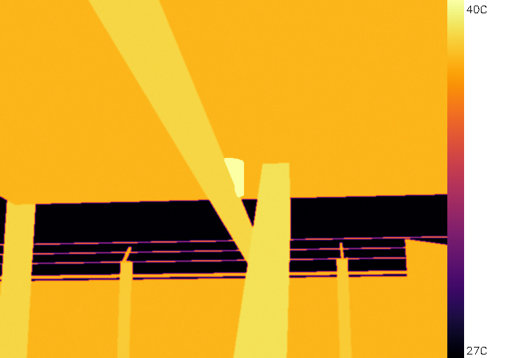
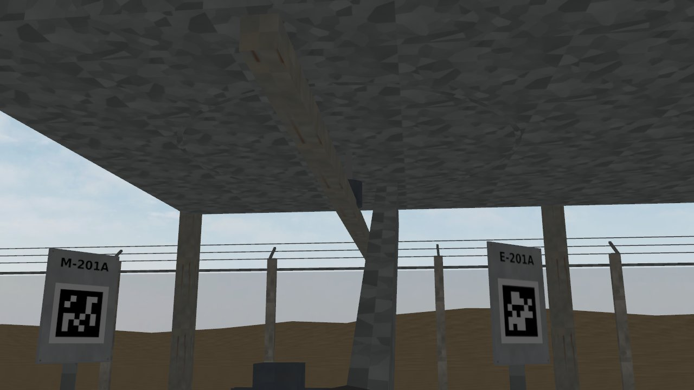
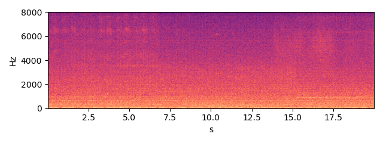

E-201A — fin-fan shaft bearing assembly
Status none HI 0.95 RUL ≥ 90 d (cap) (band = 90 % interval)
Health indicator per inspection round; vertical lines = maintenance log entries; red band = RUL estimate.
Inspection snapshots (robot camera and microphone)

thermal, aim 3, max 54.7 C (Gazebo round 2026-10-03 16:41)

RGB, aim 3

sound, aim 3 (dwell window)
Alarm history
| time | level | fused score | HI | reasons | work order |
|---|---|---|---|---|---|
| 2026-10-18 13:05 | warning | 6.59 | 0.6935 | acoustic_fusion |
Maintenance log (CMMS view)
| date | type | details |
|---|---|---|
| 2026-10-11 | repair | {"wo": "WO-0003", "feedback": "confirmed", "parts_replaced": ["fan_bearing"]} |
| 2026-10-12 | operations | {} |
| 2026-10-12 | work_order_opened | {"wo": "WO-0003", "priority": "critical", "reason": "machine tripped (operations)"} |